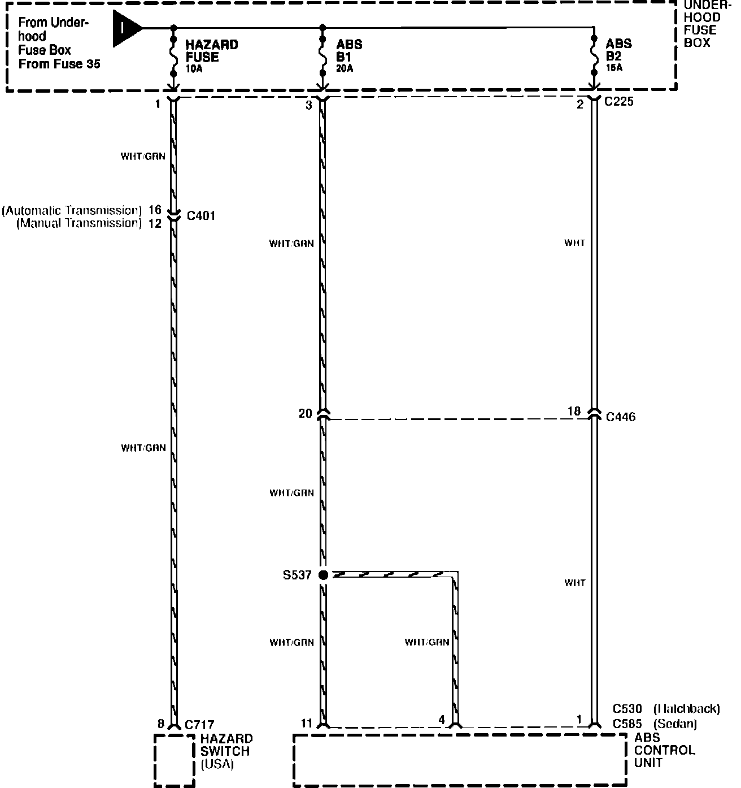

Operation CHARM
: Car repair manuals for everyone.
Home
>>
Acura
>>
1992
>>
Integra L4-1678cc 1.7L DOHC (VTEC) FI
>>
Repair and Diagnosis
>>
Power and Ground Distribution
>>
Fuse
>>
Diagrams
>>
Electrical Diagrams
>>
Under-Hood Fuse Box
>>
Hazard Fuse, ABS B1, and ABS B2
Hazard Fuse, ABS B1, and ABS B2
Power Distribution: Under-Hood Fuse Box:
